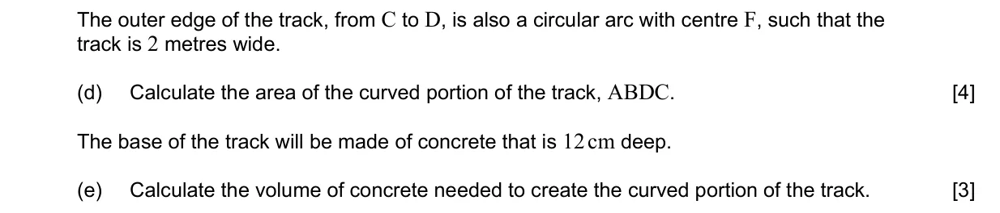
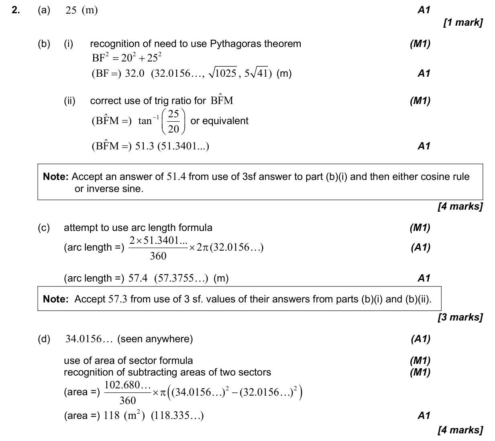
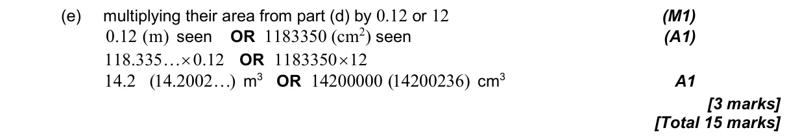

15 marks P2 TZ2 Calculator Appears in AI SL P2 Q2AI HL P2 Q1 3.4 Arc length and sector area in degrees3.2 2D and 3D trigonometry, sine rule, cosine rule and area3.1 3D space, volume, angles, distance and midpoints2.1 Equations of straight lines, parallel and perpendicular Question Hide breakdown abcde Markscheme 